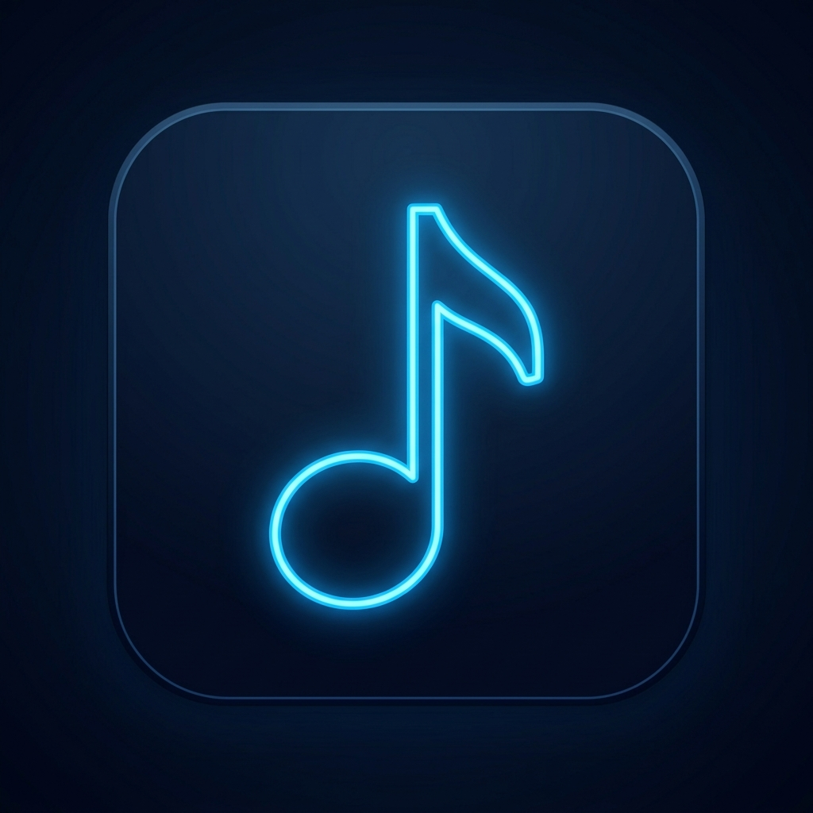
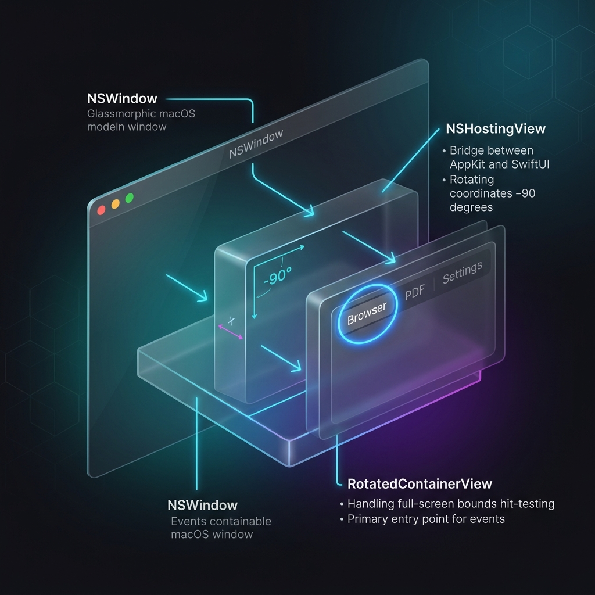
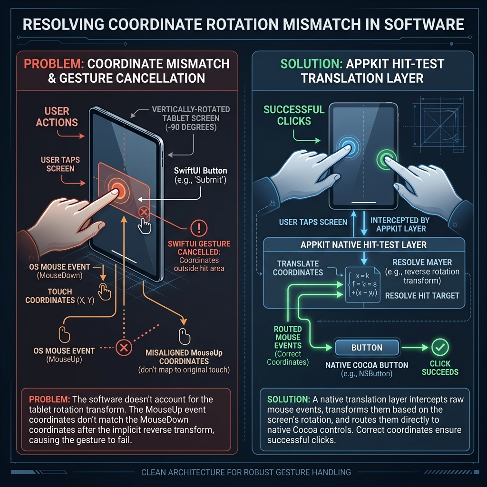

VectoDesigned for Mac musicians using physically rotated portrait-oriented external monitors. Since MacBooks lack built-in screen rotation capabilities, Vecto displays sheet music, PDFs, and web pages vertically while maintaining perfect coordinate mapping. Optimized for remote control using a Bluetooth mouse, foot pedal, or compact 2-button keyset.
Why "Vecto"? The name is derived from vector, representing direction and magnitude. In mathematics and physics, vectors define heading and coordinate translation. Because the app dynamically redirects input coordinate vectors and realigns physical screen layouts to match your rotated display, Vecto perfectly embodies this alignment transformation.
🔒 macOS Security Note: If macOS reports the downloaded app is "damaged" or cannot be opened, you can fix it in 5 seconds. Right-click the app and choose **Open**, or run `xattr -cr /Applications/Vecto.app` in your Terminal to clear the download quarantine.
A collection of deeply thought-out, pixel-perfect capabilities designed to solve hardware rotation constraints.
Navigate websites, PDFs, and images seamlessly using just a Bluetooth left-right arrow control button or pedal, eliminating the need for a mouse or full keyboard.
Loads directory folders into a beautiful file selection list detailing PDF names and byte sizes for quick browse-to-open sheet loading.
Launches instantly in borderless fullscreen mode by default, immediately transforming your screen into a professional music stand.
Deep dive into how the app intercepts window event queues, applies rotation offsets, and routes events back into the SwiftUI hierarchy.

Our specialized Cocoa event router intercepts low-level window events, bypasses standard coordinates conversion, and remaps clicks based on real-time hardware orientation. This guarantees WKWebView and PDFView remain fully functional under rotation.
Bridging declarative layout systems with low-level window coordinate conversion matrices.
In AppKit, visual layout rotation is achieved using frameCenterRotation. However, SwiftUI's custom gesture engine processes coordinate movements internally during active drag-and-release loops.
When dragging or releasing a mouse click, SwiftUI's tracking engine fails to map coordinates through the frameCenterRotation transform matrix. This mismatch makes the engine treat mouse-up coordinates as physical screen values, thinking the user dragged away and released elsewhere. The button gesture is immediately cancelled.
Instead of fighting the declarative coordinate tracking system, we wrapped native Cocoa NSButton views using NSViewRepresentable.
By tweaking the window's hitTest(_:) implementation to check the target leaf control and its ancestral tree for "Button", physical events are routed directly to the native control. The native button handles its own drag-tracking loops natively, firing the actions perfectly every time.
To provide tactile visual click feedback, we implemented a 250ms green flash on the selector items. However, delaying actions creates a critical race condition: if a user clicks a row and immediately presses keyboard arrows, the active selection index gets out of sync.
We solved this by splitting row events into an immediate action (instantly updating the selection index and snapping the blue keyboard outline to the clicked row) and a deferred action (executing the load/navigation after the 250ms green flash), while keeping all row indices sequentially unique.
The Browser tab uses a native AppKit WKWebView. Since native controls bypass SwiftUI's custom gesture engine, they use AppKit's low-level event routing directly and are completely unaffected by SwiftUI's rotated coordinate tracking bug.

Follow these quick steps to compile and launch the application natively on your Mac.
git clone https://github.com/j4dy/Vecto.git cd Vecto
swiftc RotatedBrowserApp.swift ContentView.swift WebView.swift PDFViewWrapper.swift Analytics.swift -o net.j4dy.RotatedBrowserApp
./net.j4dy.RotatedBrowserApp